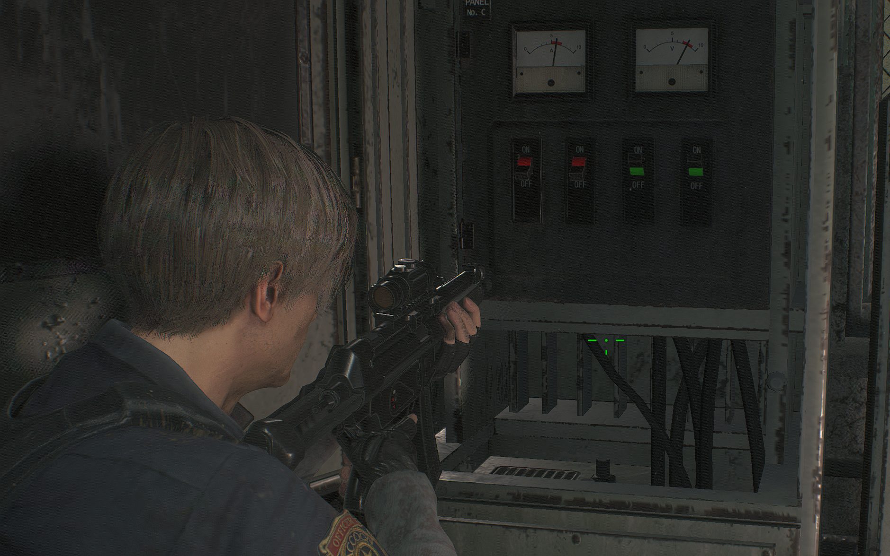
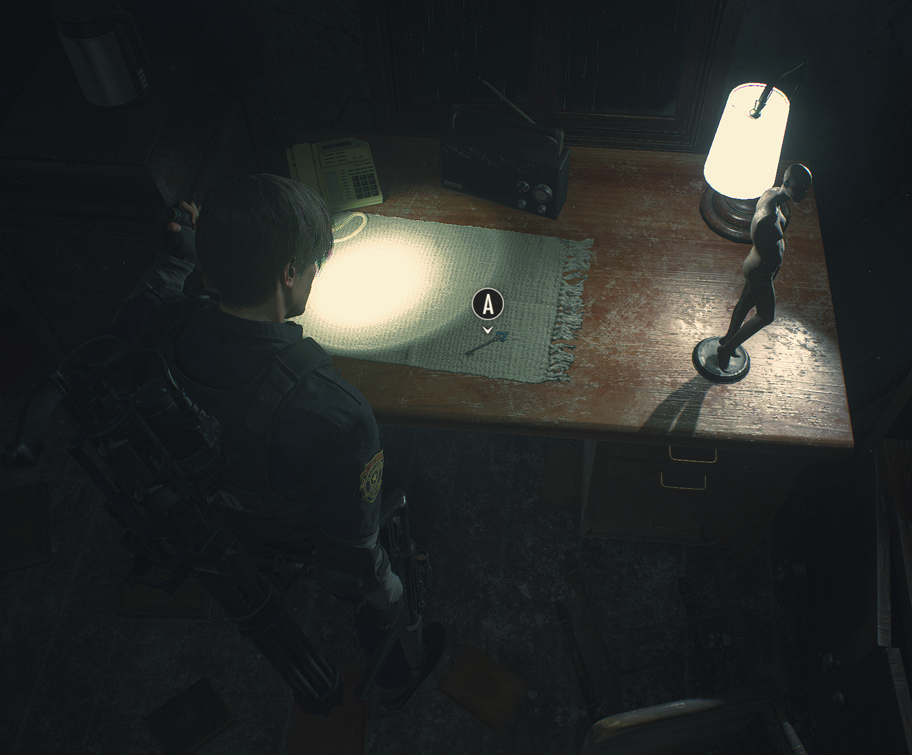
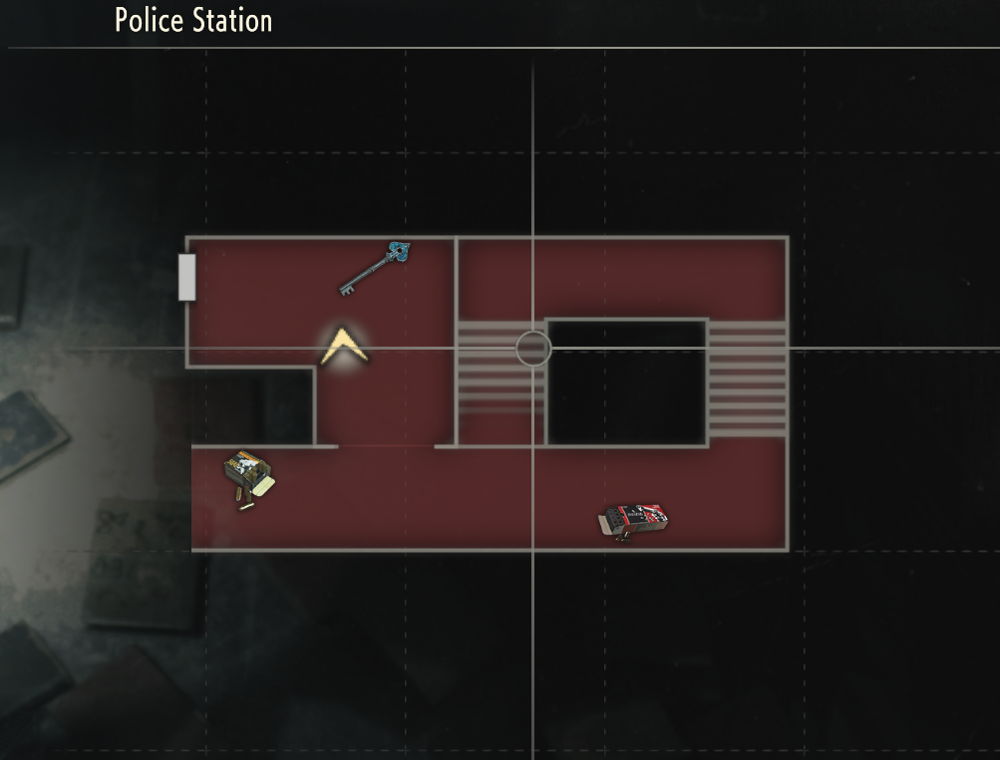
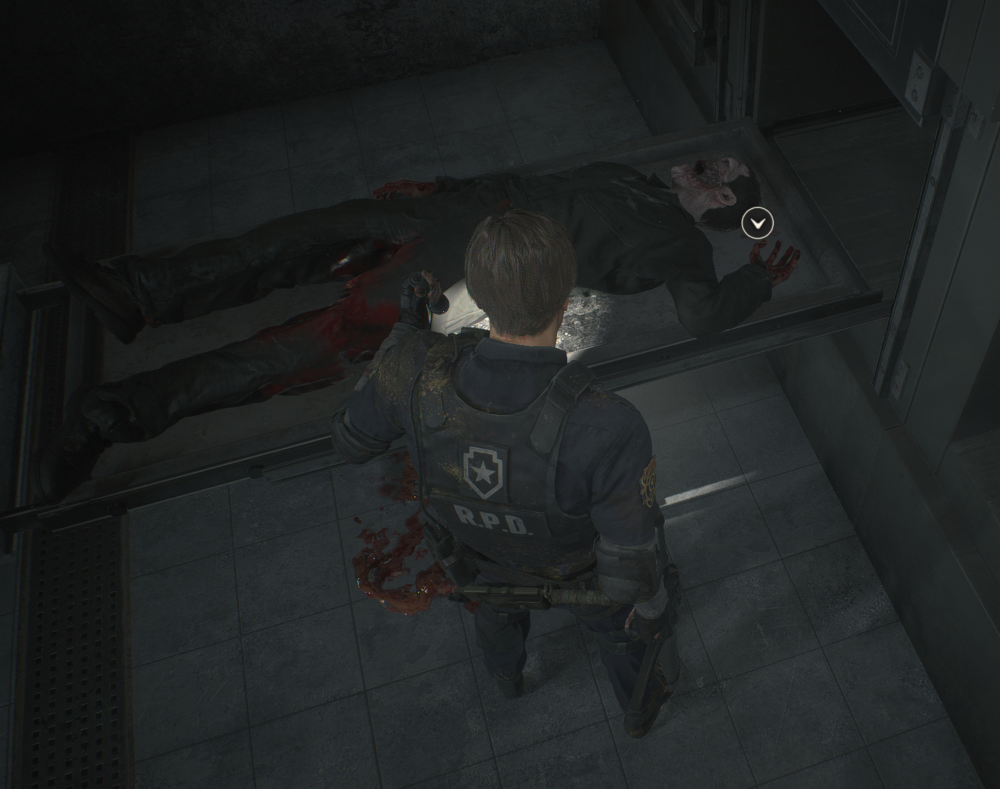

Leon Kennedy guide

Resident Evil 2 Remake — Codes, puzzles and key locations
Leon Kennedy arrives in Raccoon City for his first day as a police officer, but it's not exactly the welcome he was expecting. The streets are full of zombies, the police station is in chaos, and things only get worse from there. With the city falling apart around him, Leon has to find a way out while trying to figure out what caused the outbreak in the first place.
Safe codes
West Office Safe
Code: Left 9, Right 15, Left 7
Reward: Hip Pouch
Waiting Room Safe
Code: Left 6, Right 2, Left 11
Reward: Muzzle Brake (Matilda)
Treatment Pool Room Safe
Code: Left 2, Right 12, Left 8
Reward: Shotgun Stock (W-870)
Locker codes
Shower Room Locker
Code: CAP

3F Locker
Code: DCM

Control Room Locker
Code: SZF
Leon's Desk
Left code: NED

Right code: MRG

Puzzle solutions
Statue Medallion Puzzles
1st Run
Lion Statue
Lion, Branch, Bird

Unicorn Statue
Fish, Scorpion, Jug

Maiden Statue
Woman, Bow, Snake

2nd Run
Lion Statue
[Add solution]
Unicorn Statue
[Add solution]
Maiden Statue
[Add solution]
Electronic Door Panels
1st Run
[Add solution]
2nd Run
[Add solution]
Chess Plug Puzzle
1st Run
[Add solution]
2nd Run
[Add solution]
Greenhouse Puzzle
1st Run
[Add solution]
2nd Run
[Add solution]
Generator Room puzzle
1st & 2nd Run
The Generator Room puzzle is the same in both Leon's 1st and 2nd Runs.
Turn switches 3 and 4 ON, leaving switches 1 and 2 OFF.
This restores power and opens the electronic doors in the basement.

Weapons & upgrades
Weapon locations
Matilda Handgun: Starting weapon (1st Run).
M19 Handgun: Guardroom, Police Station B1 (2nd Run only).
W-870 Shotgun: Safety Deposit Room, Police Station 1F.
Lightning Hawk Magnum: S.T.A.R.S. Office, Police Station 2F.
Chemical Flamethrower: Supplies Storage Room, Lower Sewers.
Anti-Tank Rocket Launcher: Obtained during the final boss fight.
Weapon upgrades
Matilda - High-Capacity Magazine: Leon's desk, West Office, Police Station 1F.
Matilda - Muzzle Brake: Waiting Room safe, Police Station 2F.
Matilda - Gun Stock: Police car boot, Parking Garage B1.
W-870 - Long Barrel: Kendo Gun Shop.
W-870 - Shotgun Stock: Treatment Pool Room safe, Sewers.
Lightning Hawk - Long Barrel: Special Weapons Case, Underground Stairs.
Lightning Hawk - Red Dot Sight: Wesker's desk, S.T.A.R.S. Office, Police Station 2F.
Chemical Flamethrower - Regulator: Nap Room, NEST Laboratory B1.
Inventory upgrades
West Office Hip Pouch: West Office safe, Police Station 1F.
West Storage Room Hip Pouch: West Storage Room, Police Station 3F (1st Run) or Main Hall (2nd Run).
Operator's Room Hip Pouch: Operator's Room, Underground Facility.
Safety Deposit Room Hip Pouch: Locker 203, Police Station 1F.
Sewers Workroom Hip Pouch: Workroom, Upper Sewers.
Laboratory Nap Room Hip Pouch: Nap Room, NEST Laboratory B1.
Hardcore difficulty: Only three Hip Pouches are available: West Office, Safety Deposit Room and Laboratory Nap Room.
Keys & keycards
Important keys
Spade Key
3F Stairwell


Found on a desk.
Diamond Key
Morgue

Found inside a body drawer.
Club Key
Boiler Room
Found on a whiteboard.
Sewer Key
Bottom Waterway
Found near the Bottom Waterway.
Keycards
Weapons Locker Key Card
Art Room — 2F Police Station
Unlocks the shotgun locker in the Safety Deposit Room.


Parking Garage Key Card
Jail — Police Station B1
Obtained from Ben's cell. Unlocks the Parking Garage exit.
Other keys
S.T.A.R.S. Badge / USB Key
Bejeweled Box
Combine the Red Jewel with the Bejeweled Box to obtain the badge. Examine it to reveal the USB connector.
Gas Station Key
Gas Station — Opening Section
Found in the back storage area. Unlocks the exit door.

Car Key
Firing Range — Police Station B1
Found inside a Tin Storage Box in the Firing Range. Examine the box to obtain the Car Key, then use it to unlock the boot of a police car in the Parking Garage.

Portable Safes
Unlike lockers and standard safes, Portable Safes don't have a fixed combination. The button sequence is randomised for each playthrough, so you'll need to solve the puzzle yourself.
The aim is to light up all eight green indicators in order, moving either clockwise or anticlockwise around the circle. It doesn't matter which light you start with, as long as you follow the correct order without skipping any.
Start by pressing different buttons to work out which light each one controls. Make a note of the correct sequence as you go. If you make a mistake, the puzzle resets, but the combination won't change.
Tip: Take your time and write down the button order. Once you've worked out the sequence, you can enter it again without guessing.
Each Portable Safe contains a Spare Key for the Safety Deposit Room keypad. Collecting both allows you to open locker 203 and grab an extra Hip Pouch.
Useful tips
More tips for Leon's campaign will be added here.